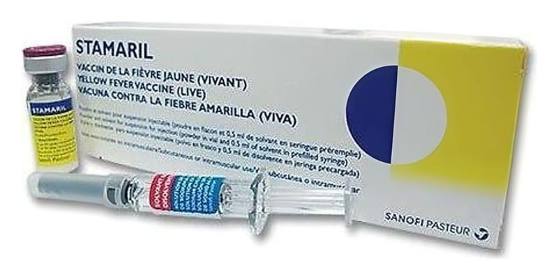

Stamaril 0,5 ml IM/SC Enjeksiyon İçin Liyofilize Toz İçeren Flakon Ve Çözücü İçeren Kullanıma Hazır Enjektör, 1 Adet

Ne için kullanılır
KT · Bölüm 1STAMARIL, sarı humma olarak adlandırılan ciddi, bulaşıcı hastalıktan korunmak için kullanılan bir aşıdır.
Sarı humma dünyanın belli bölgelerinde görülmektedir. İnsanlara, enfekte sivri sineklerin ısırığıyla bulaşıp, yayılmaktadır. STAMARIL aşağıda sıralanan kişilerde kullanılır: - Sarı hummanın görüldüğü bölgelere seyahat edenler, bu bölgelerden geçenler veya bu bölgelerde yaşayanlar, - Giriş için Uluslararası Aşılama Sertifikası şart koşan herhangi bir ülkeye seyahat edenler (aynı yolculuk sırasında daha önceden ziyaret edilen ülkelere bağlı olabilir veya olmayabilir), - Laboratuvar personeli gibi bulaşıcı materyallerle çalışanlar.
Geçerli bir aşılama sertifikası için Sarı hummaya karşı onaylı bir aşılama merkezinde aşılanmak suretiyle bir Uluslararası Aşılama Sertifikası alınması gerekmektedir. Bu sertifika, aşının ilk dozunu izleyen 10. günden itibaren geçerlidir. Destek (rapel) doz gerektiğinde (bkz. Bölüm 3) sertifika enjeksiyonun hemen ardından geçerlidir.
STAMARIL, kutuda, flakonda toz ve çözücüsü ayrı olarak kullanıma hazır şırınga içinde yer almakta 0,5 mL’lik enjeksiyonluk süspansiyon olarak tek doz halinde kullanılmaktadır.
STAMARIL bileşiminde inek sütünden elde edilmiş laktoz bulunmaktadır.